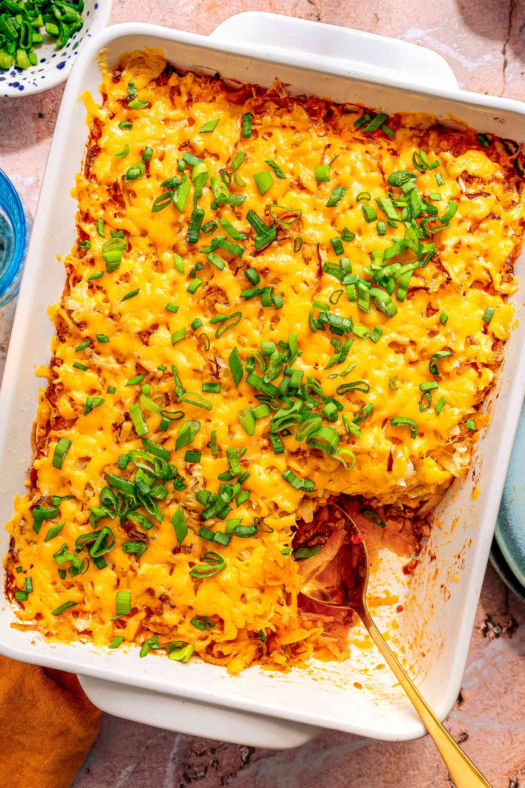

Casserole Recipe

Description
This shipwreck casserole might not be pretty, but it is a tasty, busy-night, kid-friendly meal. The prep time is generally limited to how fast your can opener works and how hard it is to unwrap your meat. The big bonus is that it's a complete one-pot meal!
Ingredients
- 1 pound lean ground beef
- 1 (7.25 ounce) package macaroni and cheese mix
- 1 (14.5 ounce) can diced tomatoes
- 1 cup milk
- 1 cup frozen peas
- 1 cup frozen corn
- 1 teaspoon seasoned salt or to taste
- 1 cup shredded Cheddar cheese, divided
Steps
- Heat a large skillet over medium-high heat. Cook and stir beef in the hot skillet until browned and crumbly, 5 to 7 minutes.
- Stir pasta and cheese mixture from macaroni and cheese package into beef. Stir in tomatoes, milk, peas, and corn; bring to a boil, reduce heat to medium-low, cover, and simmer until noodles are tender, about 12 minutes.
- Season with seasoned salt. Stir 1/2 of the Cheddar cheese into dish to melt. Top with remaining cheese.
Home